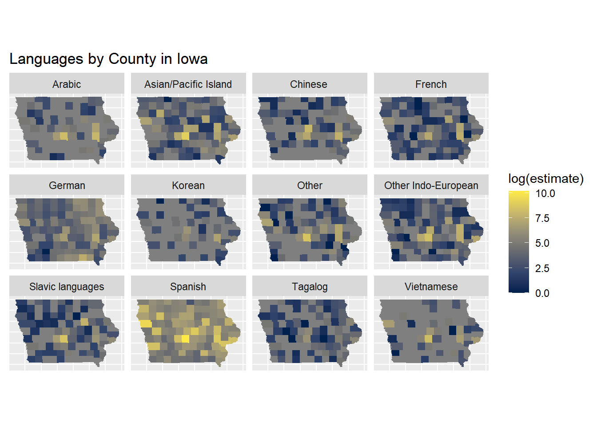
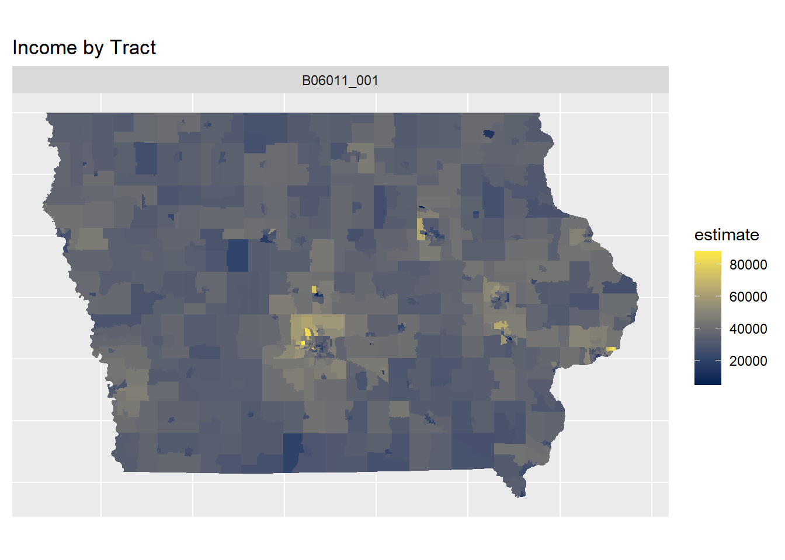
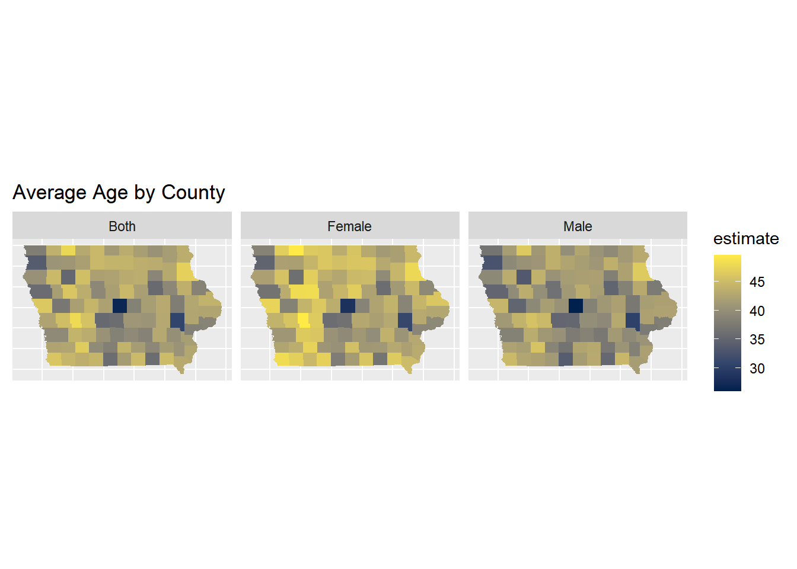
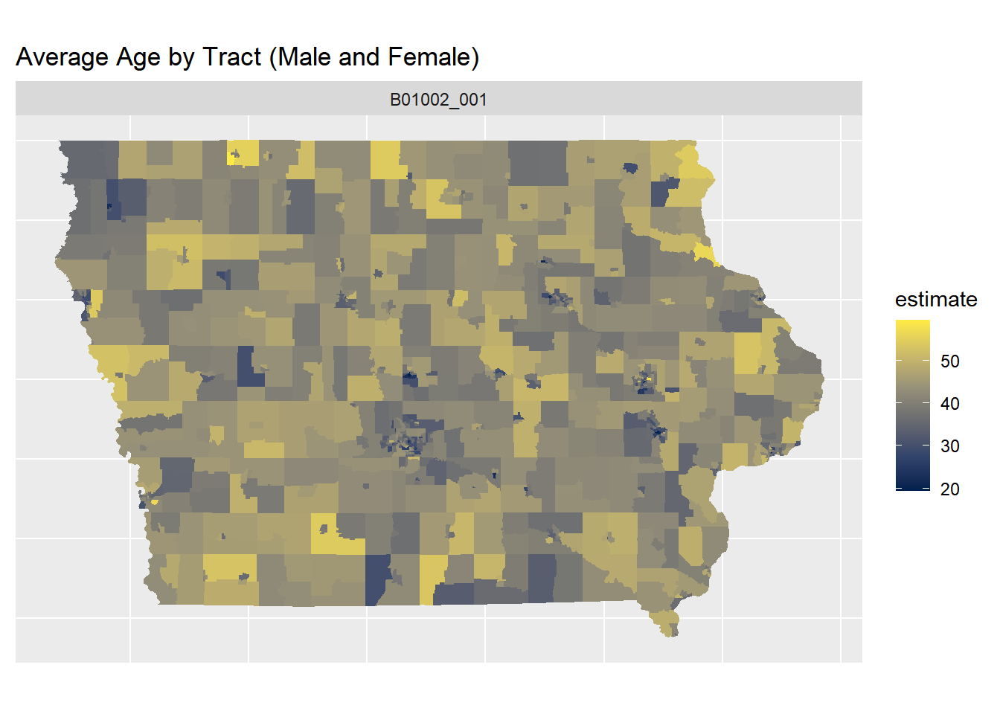
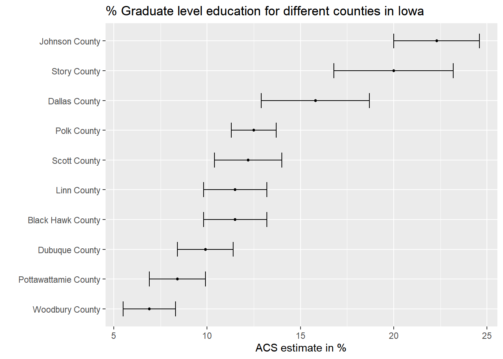
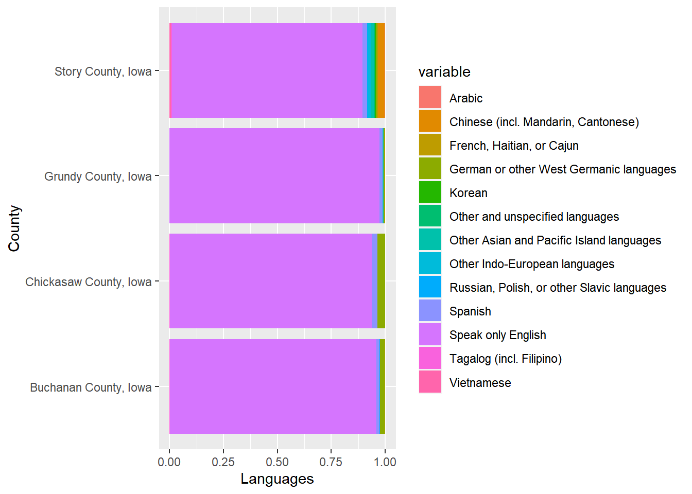
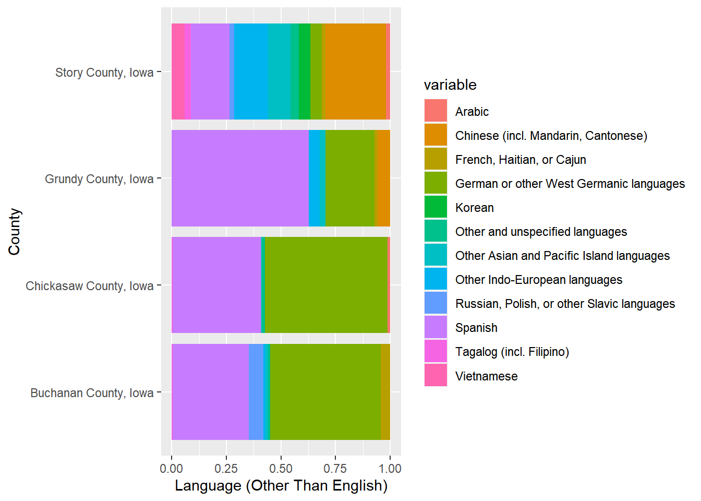
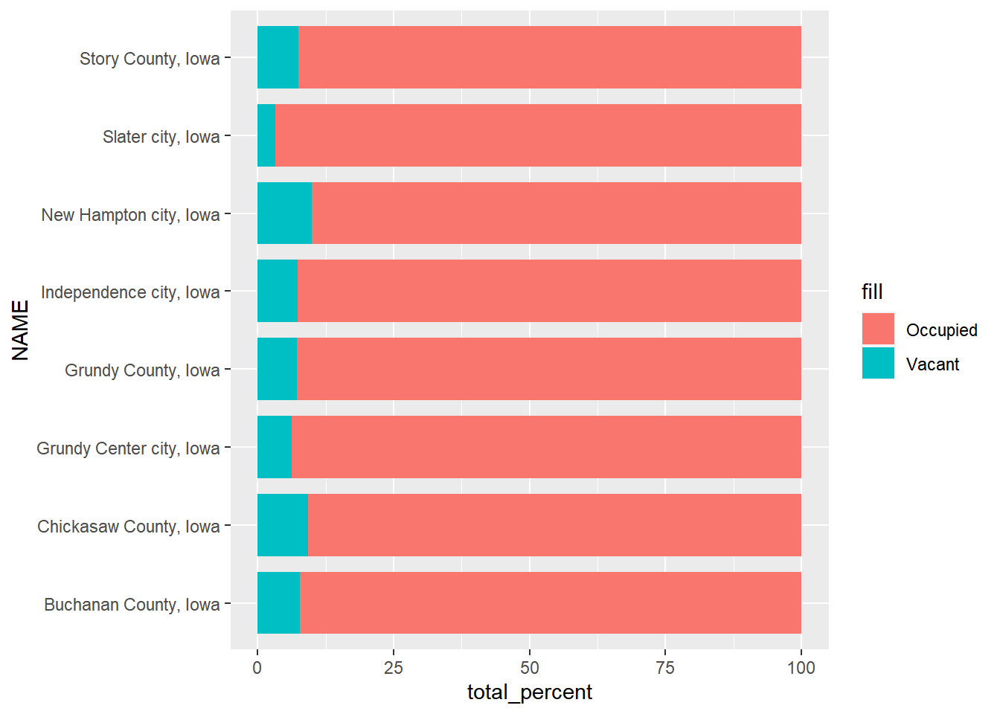
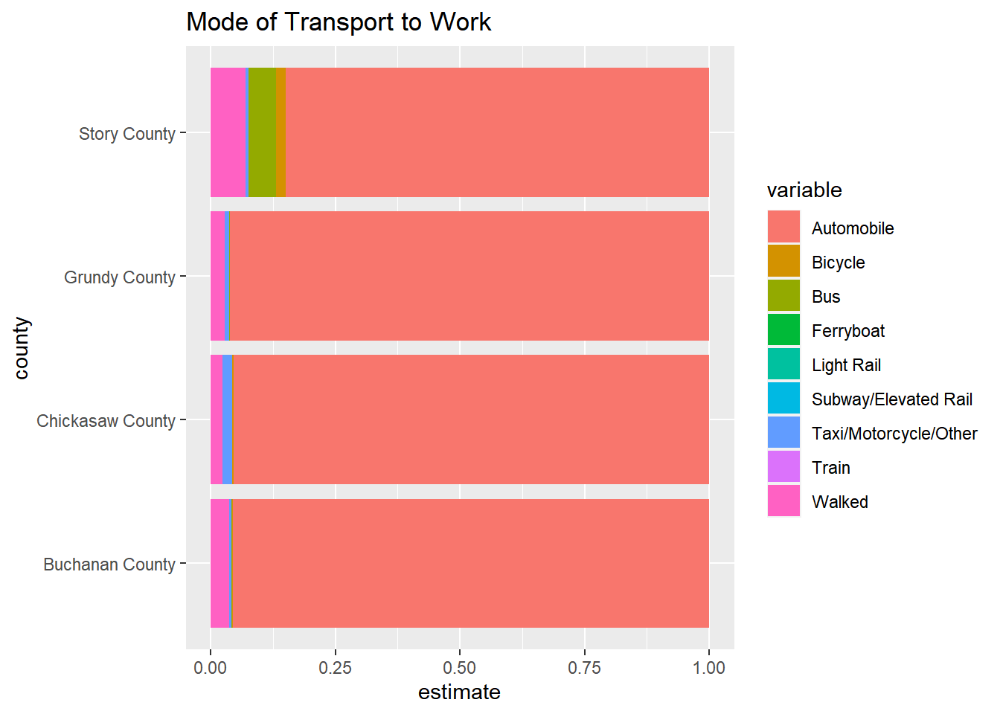
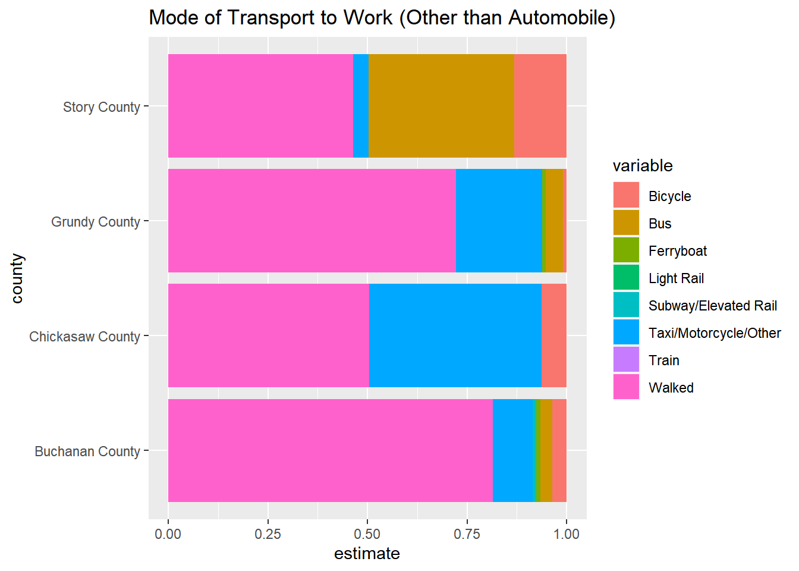

This week we practiced using the Tinycensus package, and we looked into data that we found interesting, but the data could be used in our final project.
This week we looked at where non-English languages are spoken, which can show if we would need to staff stores with speakers of other languages. We looked at income to see if stores need to prioritize competitive pricing in certain counties.
Alex
lang_map <- iowa_lang %>%ggplot(aes(fill =log(estimate))) +theme(axis.text.x=element_blank(), #remove x axis labelsaxis.ticks.x=element_blank(), #remove x axis ticksaxis.text.y=element_blank(), #remove y axis labelsaxis.ticks.y=element_blank() #remove y axis ticks ) +labs(title ="Languages by County in Iowa") +geom_sf(color =NA) +facet_wrap(~variable) +scale_fill_viridis_c(option ="E") lang_map

This map shows what languages are spoken in each county. We can see that Spanish is by far the most popular non-English language spoken in Iowa, and most counties had very little diversity in languages.
iowa_income %>%ggplot(aes(fill = estimate)) +theme(axis.text.x=element_blank(), #remove x axis labelsaxis.ticks.x=element_blank(), #remove x axis ticksaxis.text.y=element_blank(), #remove y axis labelsaxis.ticks.y=element_blank() #remove y axis ticks ) +labs(title ="Income by Tract") +geom_sf(color =NA) +facet_wrap(~variable) +scale_fill_viridis_c(option ="E")

This map shows the average income by tract. We can see that Des Moines and the other major Metropolitan areas have significantly higher incomes than rural areas.
iowa_ages_by_gender %>%ggplot(aes(fill = estimate)) +theme(axis.text.x=element_blank(), #remove x axis labelsaxis.ticks.x=element_blank(), #remove x axis ticksaxis.text.y=element_blank(), #remove y axis labelsaxis.ticks.y=element_blank() #remove y axis ticks ) +labs(title ="Average Age by County") +geom_sf(color =NA) +facet_wrap(~variable) +scale_fill_viridis_c(option ="E")

This map shows the ages by county, broken down by gender. Des Moines is significantly younger than the rest of Iowa. We also see a line near the Western border where people have an abnormally old age.
iowa_ages_by_gender %>%ggplot(aes(fill = estimate)) +theme(axis.text.x=element_blank(), #remove x axis labelsaxis.ticks.x=element_blank(), #remove x axis ticksaxis.text.y=element_blank(), #remove y axis labelsaxis.ticks.y=element_blank() #remove y axis ticks ) +labs(title ="Average Age by Tract (Male and Female)") +geom_sf(color =NA) +facet_wrap(~variable) +scale_fill_viridis_c(option ="E")

This map shows the age by tract, for both men and women.
Srika
grad_education_Iowa <- grad_education%>%separate(NAME, into =c("county", "state"), sep =", ") %>%filter(state =="Iowa") %>%arrange(desc(estimate))ggplot(grad_education_Iowa, aes(x = estimate,y =reorder(county, estimate))) +geom_errorbar(aes(xmin = estimate - moe, xmax = estimate + moe),width =0.5, linewidth =0.5) +labs(title ="% Graduate level education for different counties in Iowa",x ="ACS estimate in %",y ="")+geom_point(size =1)

This graph shows graduate education by county.
Aaron
Language Plot (ACS5 2021):
# Plotsplot_1 <- lang_counties %>%ggplot(aes(x = NAME, y = estimate, fill = variable)) +geom_bar(stat ="identity", position ="fill") +xlab("County") +ylab("Languages") +coord_flip()plot_2 <- lang_counties %>%filter(variable !="Speak only English") %>%ggplot(aes(x = NAME, y = estimate, fill = variable)) +geom_bar(stat ="identity", position ="fill") +xlab("County") +ylab("Language (Other Than English)") +coord_flip()plot_1

This plot shows the distribution of languages spoken in the four counties with English included.
plot_2

This plot shows the language distribution excluding English. There is a great degree of variation from county to county in regards to the distribution of spoken languages other than English (which comprises a vast majority in all of the counties).
Vacancy Plot (Decennial, 2020):
Iowa_Places %>%ggplot(aes(x = NAME)) +geom_col(aes(y = total_percent, fill ="Occupied"), width =0.8) +geom_col(aes(y = percent, fill ="Vacant"), width =0.8) +coord_flip()

This is a graph representing the percentage of vacant housing units per location for both the counties and their respective cities. Slater City has the lowest percentage of vacancies while New Hampton City has the highest.
Mode of Transport Plot (ACS5, 2021):
plot_1 <- transport_small %>%ggplot(aes(fill = variable, x = county, y = estimate)) +geom_bar(stat ="identity", position ="fill") +coord_flip() +ggtitle("Mode of Transport to Work")plot_2 <- transport_small %>%filter(variable !="Automobile") %>%ggplot(aes(fill = variable, x = county, y = estimate)) +geom_bar(stat ="identity", position ="fill") +coord_flip() +ggtitle("Mode of Transport to Work (Other than Automobile)")plot_1

This is a plot of the reported mode of transport to work for each of the 4 counties. Commute by automobile overwhelmingly predominates.
plot_2

This is a plot of the reported mode of transport for each county with automobile excluded. In two of the counties, “walking” is the majority response.